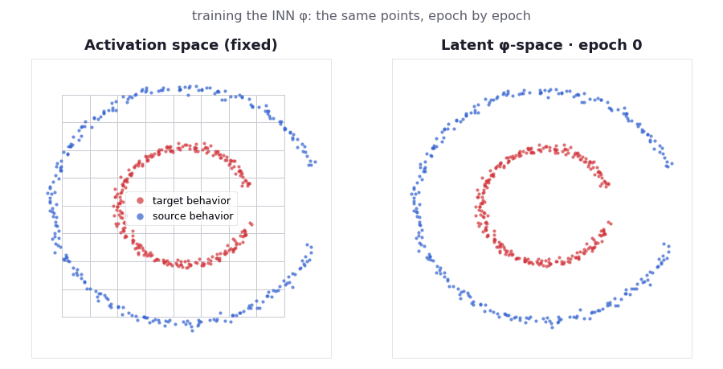
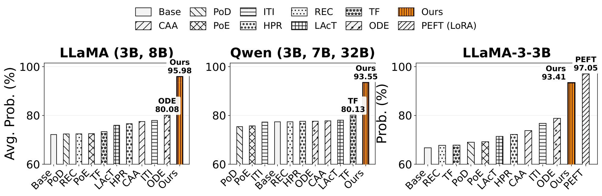
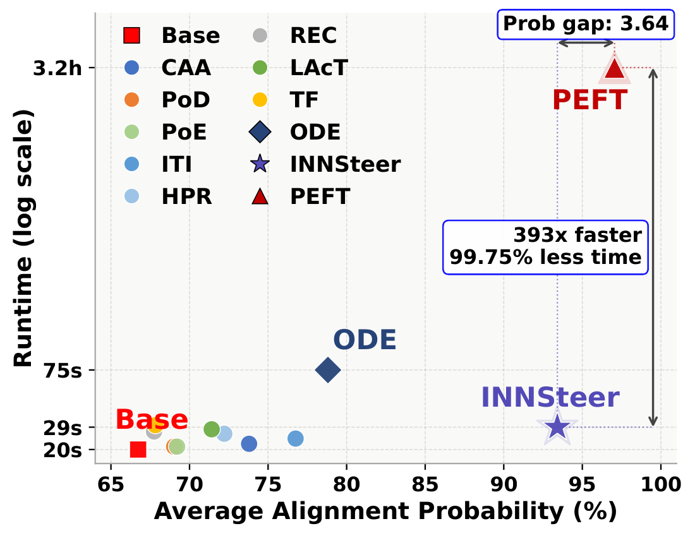

NeurIPS 2026Spotlight
INNSteer
Beyond Linear Activation Steering:
Invertible Latent Transformations
for Controlling LLM Behavior
1Indiana University, Bloomington, USA
tl;drMost activation-steering methods add the same fixed vector to every input, which fails when a behavior is encoded along curved directions. INNSteer learns a small invertible network that maps an LLM’s activations into a latent space where the behavior change is a single shift. It applies the shift there and maps back exactly, so each input gets its own nonlinear edit. The model’s weights never change.
We train a projection function that maps the original non-linear point clouds to linearly separable point clouds for effective steering.

1 Overview
Activation steering changes an LLM’s behavior at inference time without retraining: you nudge the hidden activations at one layer, for example to make the model refuse unsafe requests or hallucinate less. The usual recipe takes prompt pairs that do and don’t show a behavior, averages the difference between their activations, and adds that steering vector to every input.
The problem
One fixed vector assumes the behavior is the same straight-line shift everywhere. When activations lie on curved or unevenly stretched surfaces, the right direction changes from input to input, so control is weak or inconsistent.
The method
Learn an invertible network φ. Shift activations in φ’s latent space, where the behavior is linear, then map back with the exact inverse φ−1. One latent shift becomes a different nonlinear edit for each input.
Why it matters
Much stronger behavior control than linear, transport-based and learned nonlinear steering, close to fine-tuning, while the model’s weights stay frozen and no information is lost on the way back.
Read the abstract
Activation steering provides a lightweight inference-time mechanism for controlling large language models (LLMs) by modifying their internal activation vectors toward desired behaviors. Most existing methods compute a fixed steering direction in the original activation space, typically from pairs of contrastive examples using mean differences, linear probes, or arbitrary separability criteria. While effective to a certain extent, these methods treat behavioral control as a global, linear, additive offset: the same direction is applied across inputs, and behaviors are linearly separable. This can be restrictive when behavioral features vary nonlinearly across the activation space or lie on curved and anisotropic manifolds, where the optimal intervention may be input-dependent. To address this limitation, we propose INNSteer, a nonlinear activation steering framework based on invertible latent transformations. Rather than searching for a better steering vector in the original representation space, INNSteer learns a lightweight invertible neural network φ that maps an LLM’s activations into a latent space where behavioral classes are more amenable to linear control. At inference time, activations are mapped through φ, steered in the latent space, and mapped back through the exact inverse transformation φ−1. This makes a simple latent-space translation become a nonlinear, input-dependent intervention in the original activation space. Across experiment settings on multiple LLM families, scales, behavioral traits, and safety benchmarks, INNSteer consistently improves model control over linear, transport-based, and nonlinear steering baselines while largely preserving generation fluency.
![Three-panel figure on synthetic data. Left, existing methods: linear steering h′ = h + αv adds one mean-difference vector, so arrows on the outer blue ring all point the same way and do not move points toward the inner red ring. Middle: an invertible map φ sends activations to a latent space where the blue and red classes become two separated clusters joined by a single arrow. Right, INNSteer: h′ = φ⁻¹(φ(h) + αv_φ); arrows on the outer ring now point inward toward the red ring, each in a different direction.](assets/figures/method-overview.png)
2 How INNSteer works
Standard steering applies h′ = h + αv with the same v for every input. INNSteer replaces it with a translation in a learned invertible coordinate system, applied at one layer ℓ through a forward hook:
h′ = σℓ ⊙ φℓ−1( φℓ( (h − μℓ) / σℓ ) + α vφ,ℓ ) + μℓ
Inference-time hook
Algorithm step by step
- Collect final-token activations for contrastive prompt pairs (e.g., “refuses” vs. “complies”); split 80/20 by pair.
- Normalize with training-set z-score statistics μℓ, σℓ.
- Train φℓ: RealNVP-style affine coupling layers with ActNorm, exactly invertible by construction.
- Steering vector vφ,ℓ: the difference between the two classes’ mean latent codes.
Why not compute the vector in latent space and project it back once?
A projected-back vector depends on a reference point and is again one global displacement. INNSteer evaluates the inverse at each input’s own shifted code. To first order the update is Δ(h̃) = α Jφ(h̃)−1 vφ + O(α2), so the direction depends on the local inverse Jacobian. If φ were affine, INNSteer would reduce exactly to ordinary linear steering. Formal statements and proofs are in the paper’s appendix.
Why must the map be exactly invertible?
Frozen downstream layers consume the edited activation immediately. A non-invertible encoder could separate the classes by discarding information or adding reconstruction error unrelated to the intended edit. Coupling-based INNs are nonlinear, invertible in closed form, and have triangular Jacobians whose log-determinants are cheap to compute and regularize. Invertibility is a structural guarantee, not a semantic one.
3 Main results
INNSteer has the highest alignment probability in all 30 model × behavior settings of the paper’s main table. Averaged by family, it beats the strongest steering baseline by 15.90 points on LLaMA (95.98% vs. 80.08%, ODESteer) and 13.42 points on Qwen (93.55% vs. 80.13%, TruthFlow). Gains over the unsteered model are largest on smaller models, up to +42.24 points (LLaMA-3-3B, Religion).
Models
LLaMA-3-3B / 8B-Instruct and Qwen2.5-3B / 7B / 32B-Instruct.
Behaviors
Six traits from Anthropic’s Persona dataset: Conscientious, Religion, Self-Improve, Self-Aware, Alliance, Impact.
Baselines
Linear: CAA, RepE (PoD/PoE), ITI. Transport: LAcT, HPR. Learned nonlinear: REC, TruthFlow, ODESteer.
Metric definitions and baseline glossary
- Prob (%) ↑
- Alignment probability: average probability the model assigns to the target-behavior answer in a two-choice prompt. For hallucination suppression, lower is better.
- PPL ↓
- Perplexity of the model’s free-text explanation of its answer, a proxy for fluency. Compare against the same model’s Base value.
- Score (0–10)
- LLM-judge score (GPT-OSS-120B) on open-ended generations: degree of refusal (↑) or hallucination (↓).
- D, C
- D: Fisher discriminability along the mean-difference direction (0–1). C: mean cosine between each pair’s difference and the global steering direction.
- CAA
- Adds the mean activation difference between contrastive examples.
- RepE
- First principal component of differences (PoD) or of embeddings (PoE).
- ITI
- Steering direction from a trained linear probe.
- HPR
- Householder pseudo-rotation; preserves activation norm.
- LAcT
- Dimension-wise linear optimal transport between the two distributions.
- REC
- Optimal-control formulation with a learned value model.
- TruthFlow (TF)
- Rectified flow producing input-dependent steering directions.
- ODESteer (ODE)
- Iteratively updates activations by solving an ODE with a learned vector field.
Design comparison (paper appendix). ✓ yes, ✗ no, ∼ partial.
| Method | Learned | Nonlinear | Invertible | Input-dep. | Latent | Geom. obj. | Cost |
|---|---|---|---|---|---|---|---|
| CAA | ✗ | ✗ | ✗ | ✗ | ✗ | ✗ | Low |
| RepE-PoD / PoE | ✗ | ✗ | ✗ | ✗ | ✗ | ✗ | Low |
| ITI | ✓ | ✗ | ✗ | ✗ | ✗ | ✗ | Low |
| LAcT | ✓ | ✗ | ✗ | ✗ | ✗ | ∼ | Low |
| HPR | ✓ | ✗ | ✓ | ✓ | ✗ | ∼ | Low |
| REC | ✓ | ✗ | ✗ | ✓ | ✗ | ∼ | Med |
| TruthFlow | ✓ | ✓ | ✓ | ✓ | ∼ | ∼ | Med |
| ODESteer | ✓ | ✓ | ∼ | ✓ | ✗ | ∼ | High |
| INNSteer | ✓ | ✓ | ✓ | ✓ | ✓ | ✓ | Med |

Explore every model and behavior (paper Table 1)
4 Comparison with fine-tuning
Close to LoRA, without changing weights

LoRA fine-tuning reaches 97.05% average alignment on LLaMA-3-3B. INNSteer reaches 93.41%, the best steering result (next: ODESteer, 78.81%).
Reported runtimes: Base 20 s, INNSteer 29 s, ODESteer 75 s, LoRA 11,400 s including training, i.e. 393× less time for INNSteer.
LoRA also gives much lower perplexity (15.21 vs. 25.60 for INNSteer and 25.83 for Base), so fine-tuning remains stronger when updating weights is acceptable.
5 Analysis
The steering flow in a real modelEvery prompt follows its own curved path
![Plot titled Individual trajectories (INNSteer), with axes PC 1 and PC 2. Many thin colored lines start at a single black point labeled Origin (alpha = 0) near the lower right and fan out to the upper left and top as they bend. Colors mark six concepts: Self-Awareness (blue), Self-Improvement (orange), Conscientiousness (green), Alliance Building (red), Impact Maximization (purple) and Religion Following (brown). Each concept heads in its own overall direction, and the individual lines within a concept curve differently from one another.](assets/figures/steering-trajectories.png)
Steering trajectories. INNSteer on Qwen2.5-3B-Instruct, layer 23. Each thin line follows one prompt’s activation as the steering strength α grows from 0 (black origin), projected onto the top two principal components (PC 1, PC 2) of the steering displacements; colors mark the six behaviors.
GeometryThe latent space really is easier to steer
On held-out pairs, the learned φ-space improves both diagnostics in every one of the 30 model × behavior settings:
- Fisher discriminability D0.39–0.74 in activation space → 0.94–1.00 in φ-space
- Directional consistency C0.15–0.45 in activation space → 0.74–0.95 in φ-space
Results are stable across three seeds (standard deviation at most 5.92 points per setting), and a PCA-based latent direction also works (90.30% vs. 94.52% with the mean difference).
6 Examples
Verbatim open-ended generations from the paper’s case-study appendix (LLaMA-3-8B-Instruct). Pick any baseline to compare with INNSteer. These are single illustrative prompts, not a benchmark: the base model already handles both, and the differences are mostly in tone and framing. There is no live demo for this paper.
Prompt
7 Citation
If you find INNSteer useful, please cite:
@inproceedings{nguyen2026innsteer,
title = {Beyond Linear Activation Steering: Invertible Latent
Transformations for Controlling {LLM} Behavior},
author = {Nguyen, Tuc and Le, Thai},
booktitle = {Advances in Neural Information Processing Systems (NeurIPS)},
year = {2026}
}